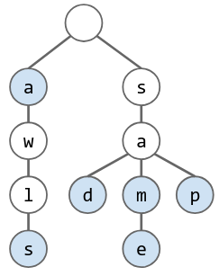

Tries
Table of Contents
1. Tries
Tries are a way to store a set of String keys, where every node stores only one letter and nodes can be shared by multiple keys. Each node additionally has a boolean variable that marks whether that node is the end of a word:

In this trie, the words “sam”, “sad”, “sap”, “same”, “a”, and “awls” exist.
1.1. Implementation
The implementation mostly depends on how each of our nodes keeps track of their children. One way to do this could be to use a data-indexed array, in which each character is transformed into the ASCII code that is used to index an array. However, this is memory-inefficient as each node would have to store an array of size 128, even if most of that array is unused.
Instead, we can use something like a hash table with the characters as keys and the nodes as values. This would allow us to increase memory effiency at minimal cost to speed (slightly slower than data-indexed array).
However, for both, get and add operations are \(\Theta(1)\).
1.2. Trie Operations
The main appeal of tries is their ability to support string-specific operations. For example, we can easily find the longest prefix of a string (that is a key), or finding all keys that match some prefix. We can also print the keys in alphabetical order by just implementing a pre-order traversal.